← 返回阅读库 · 原论文目录
论文讲解阅读文档 · 内容生成 · v012
Denoising Diffusion Implicit Models DDIM[2010.02502]
视频时长 00:08:50；讲解文字 3,532 字符；提取讲解画面 30 张。按视频原顺序阅读，每段文字保留时间戳。
文字来自整段视频的自动语音转写，按自然停顿分段，并与 PPT / 论文页面 / 演示画面对齐。未将讲解压缩为摘要；术语、数字和口述公式请结合画面及原论文核对。 阅读稿已校正规范部分明确术语误识别；原始逐字稿和每处修改记录另行保留。
讲解画面为源视频截图（640×360），不是可编辑 PPT 文件。全片按每秒 2 帧扫描内容变化，逐步展开页保留；连续动画保留代表画面。清晰度受源视频限制。
下载完整资料包 · 含离线 HTML、PDF、Word、全部 PPT 画面和字幕。
原论文与材料
Denoising Diffusion Implicit Models · 下载完整 PDF（22 页）
按时间阅读
00:00:00–00:00:35 · 画面 001
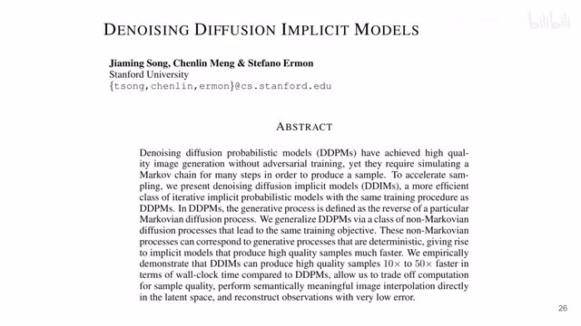
00:00:00–00:00:35 · 画面 001大家好,今天我们来快速说一篇论文 Denoising Diffusion Implicit Models，DDIM。这一篇大量沿用了 DDPM 的设计，只不过它更改了 Diffusion 过程中的前向的过程，让它变得不是 Diffusion 了。通过这样的更改之后，你在做反向过程的时候能够去掉采样中的随机性，这样使你的采样不再完全的严格的做 Auto Regressive 一步一步的来，你可以一次跳过很多个 Diffusion 的过程。
所以呢达到一个加速的效果那么下面呢我们就里面其中的一些要点呢稍微详细的讲一下首先呢在你读这篇文章的时候你要注意这篇文章使用的这个标记跟之前的这些 diffusion 的文章是不一样的之前呢我们讲这个 diffusion rate 这个是 beta 嘛然后呢一减去 beta 就是这个 alphaalpha 连成起来是这个 alpha bar 那这里呢本文的使用的标记呢这个 alpha t
00:00:35–00:00:40 · 画面 002
00:00:35–00:00:40 · 画面 00200:00:40–00:00:41 · 画面 003
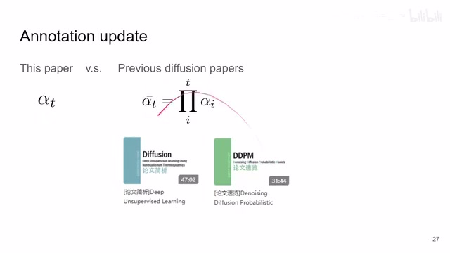
00:00:40–00:00:41 · 画面 00300:00:41–00:01:03 · 画面 004
00:00:41–00:01:03 · 画面 004就是代表这个前文中的α bar t 那同时呢你如果对 DDPM 不熟悉推荐你看我们这个视频那如果对 DDPM 里面的数学不熟悉或者说想了解原本的 15 年的那个 diffusion 是什么样子的看我们这个视频好的那么我们继续
00:01:03–00:01:04 · 画面 005
00:01:03–00:01:04 · 画面 00500:01:04–00:01:16 · 画面 006
00:01:04–00:01:16 · 画面 006在更换了这个标记之后呢我们的其他的一些标记也要相应的做一些更改那比如说在这里这个 DDPM 里面啊它的这个前向的过程这个条件概率你可以看到呢它是这么写的这个怎么推导的我们之前都有推导那么在本文中呢作者因为引用了全新的标记
00:01:16–00:01:46 · 画面 007
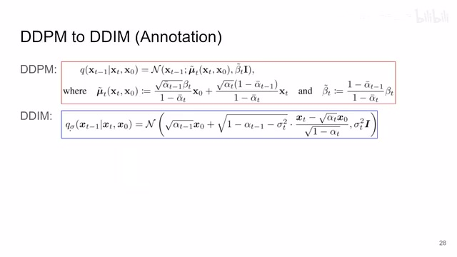
00:01:16–00:01:46 · 画面 007这个α bar 现在变成α了嘛那同时呢这个β呢也被完全省略掉了取而代之呢是一个叫做σt 的这样一个参数那么同样的这个 distribution 在本文中呢就写成了这个样子那么当然你看它都长成这个样子了它肯定不是乱写的它是有备而来
00:01:46–00:01:48 · 画面 008
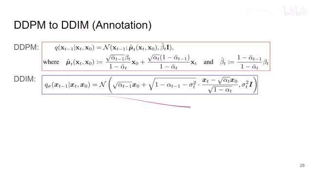
00:01:46–00:01:48 · 画面 00800:01:48–00:01:52 · 画面 009
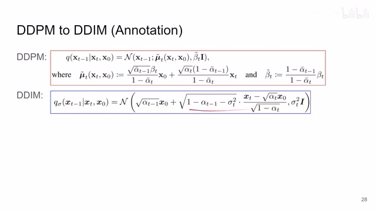
00:01:48–00:01:52 · 画面 009你如果感兴趣呢你可以按照我的这个推导的思路啊用 DDIM 的这个αt 来去替换掉原来的这个αt bar 啊你这算一通算出来这个 x0 和这个 xt 它前面的系数还有包括它的这个方差的系数是多少那同时呢我们利用这个方差把这个βt 和这个σt 的平方啊这个东西它的这个桥梁给它建立起来这样子呢你就可以把原来的 DDPM 的公式
00:01:52–00:02:01 · 画面 010
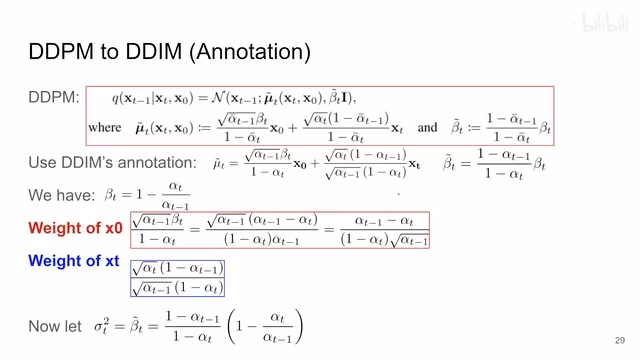
00:01:52–00:02:01 · 画面 01000:02:01–00:02:02 · 画面 011
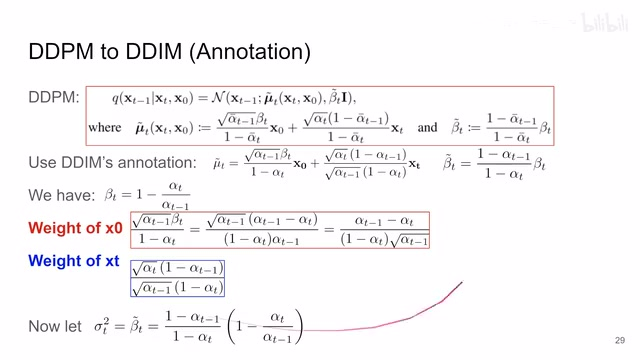
00:02:01–00:02:02 · 画面 01100:02:02–00:02:22 · 画面 012
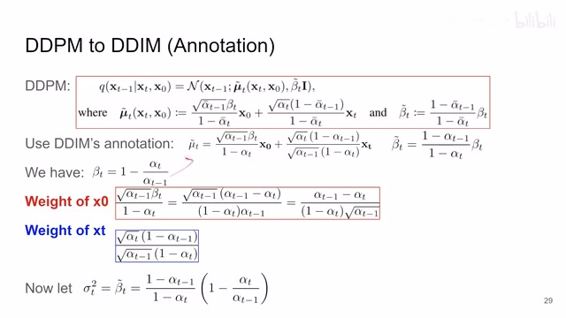
00:02:02–00:02:22 · 画面 012全部换成本文 DDIM 的这些数学符号的表达那么我已经推过了这个东西呢是等效的它显示这个样子完全是跟之前的 DDPM 是等效的也就是说在这个后验概率的表达上没有任何的变化那么然后我们再来看这个 Loss 的设计啊
00:02:22–00:02:33 · 画面 013
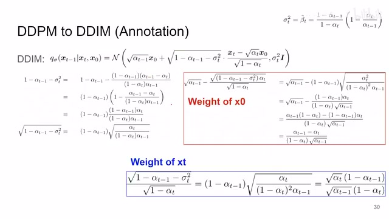
00:02:22–00:02:33 · 画面 01300:02:33–00:03:03 · 画面 014
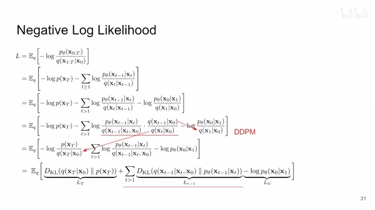
00:02:33–00:03:03 · 画面 014loss 呢我们讲 ddpm diffusion 这些东西都是这个 maximize 这个 log likelihood 也就是 minimize 这个 negative log likelihood 然后呢这个就是 evidence lower boundELBO 或者是经过这个 variational inference 之后留下来的这个东西那在 ddpm 里面呢你就直接继续做对吧你把这一项塞到前面来这一项塞到后面去然后呢整个这个 loss 变成了三个项其中呢两项是常数我们只关心中间这一项那这个是 ddpm
那在这个 DDIM 里面呢它就到这里就停住了就不再继续了故意保留了这个 given 求这个 xt-1 的这么一个概率那你对比一下还是这个 log p x 大 t 对吧在这里这项不动那么这一项概率就变成了这里这一项对吧那这一项概率在这里这一项
00:03:03–00:03:37 · 画面 015
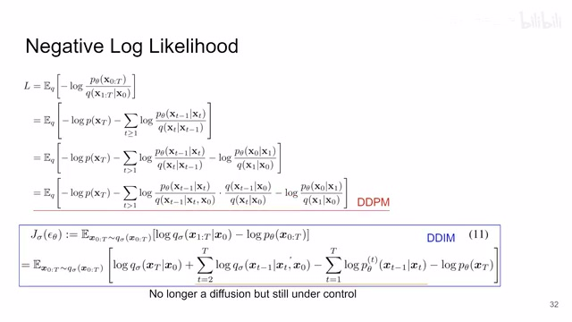
00:03:03–00:03:37 · 画面 015那么然后你再看这一项随着前面求和的进行这个 t 时刻和 t-1 时刻它们中间是相互约掉的对吧那么中间全部约掉之后只剩下了一个头一个尾就是这两项那你把这一项拿到分子上来不好取消掉不就是对应到这里所以这一项和这一项又抵消了对不对所以整个这个式子剩下来就剩下这个负的 log p 给我 x1 到 x0 那这个形式你看跟前面这个形式是一样的
00:03:37–00:03:41 · 画面 016
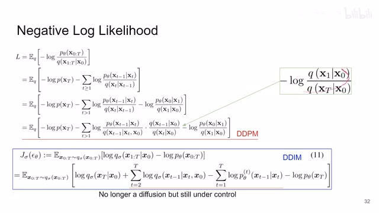
00:03:37–00:03:41 · 画面 01600:03:41–00:03:42 · 画面 017
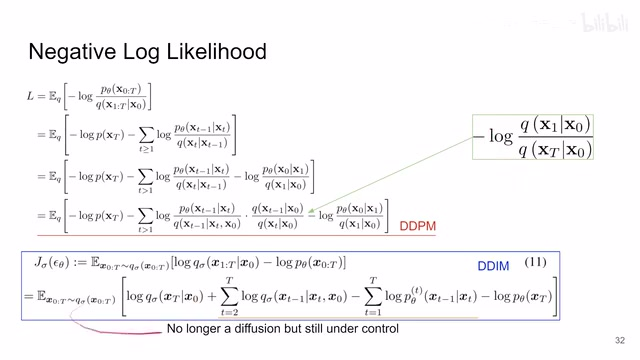
00:03:41–00:03:42 · 画面 01700:03:42–00:03:58 · 画面 018
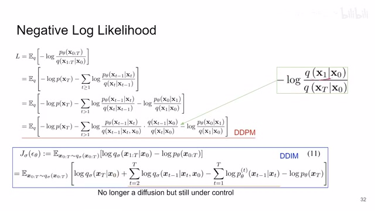
00:03:42–00:03:58 · 画面 018那就相当于把 t 等于 1 的时候也算进来，所以你看到最终化解的式子呢成这个样子。那我们前向的过程对吧，从 t 等于 2 开始一直到 capital t，那这个反向的过程 t 等于 1 开始一直到 capital t 对吧，整个这个推导啊，loss 都没有变，都是一样的。那同样的我们再看这四项里面，那前面这一项我们前向的过程都是我们人工确定好的对吧，它这个过程肯定是个常数，不用优化。那后面这一项也是 xt 是我们一个想好的定好的一个 distribution。
00:03:58–00:03:59 · 画面 019
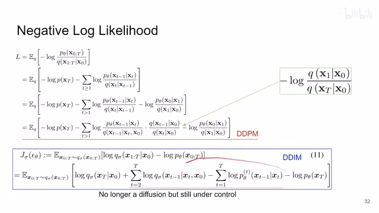
00:03:58–00:03:59 · 画面 01900:03:59–00:04:29 · 画面 020
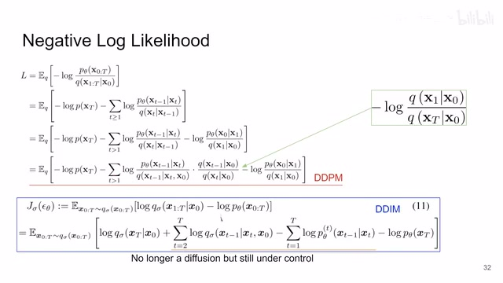
00:03:59–00:04:29 · 画面 020那这一项也是个常数，不用优化。那整个要优化的就是中间这一项。那中间这一项是什么呢？我们前向的过程这里没有我们操作的空间，因为这里没有任何需要学习的参数，都是人工定好的。那只有这里对吧，这里有我们网络的参数θ在这里。那同时呢，你注意到我们这个前向的过程这个 x1-1 它不止依赖于 x0。
00:04:29–00:04:30 · 画面 021
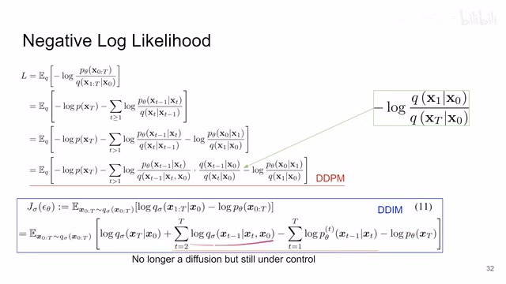
00:04:29–00:04:30 · 画面 02100:04:30–00:05:29 · 画面 022
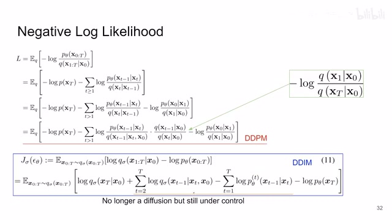
00:04:30–00:05:29 · 画面 022不只是从 x0 加噪的过程，同时呢它还依赖于这个 XT，这也就意味着整个这个过程它不是一个马尔可夫过程了，因为它使用了这个未来的信息。这也就意味着它整个这个过程 DDIM 这个过程它不是 Diffusion，但是呢这个东西对吧，既然还是我们人工给定的前向的过程，它们依然在我们的掌控之内。所以呢，我们要做的只要就是把我们后面这个 Diffusion 这个反向的过程跟我们前向的过程相匹配那就好了嘛。
所谓匹配就是说我们去把这个东西这一下给它估计出来就好了。我们来看实现这个概率的最大阻碍是什么。我们实际在推算的过程中只有 xt 拿不到 x0，那怎么办呢？很简单，我们就用一个网络去预测这个 x0。其实也不是直接的预测，同样的照搬这个 ddpm，因为我们的 x0 和 xt 存在着这样的一个关系，我们还是只需要把这个从 x0 到 xt 添加的这个噪声给它预测出来，然后我们就可以用这个式子根据我们的 xt 把 x0 写出来，就把这个式子变一下形。
00:05:29–00:05:40 · 画面 023
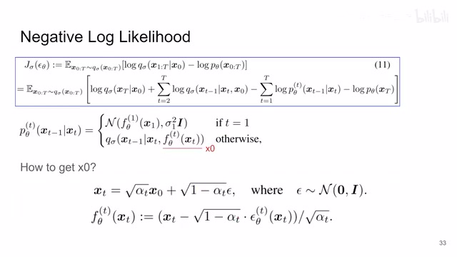
00:05:29–00:05:40 · 画面 02300:05:40–00:05:42 · 画面 024
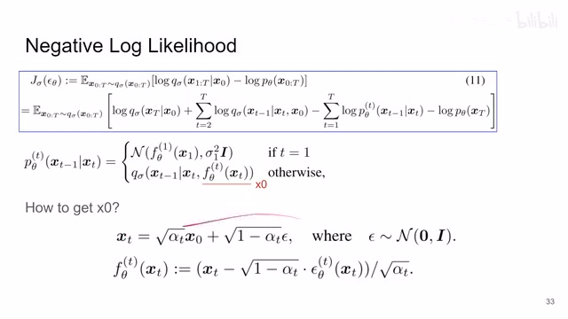
00:05:40–00:05:42 · 画面 02400:05:42–00:06:47 · 画面 025
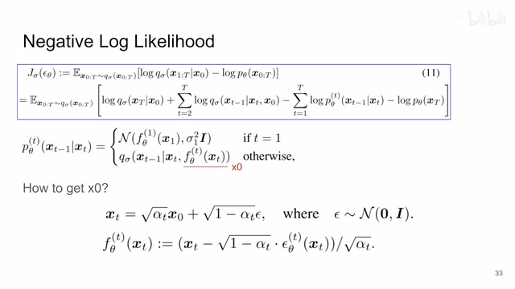
00:05:42–00:06:47 · 画面 025那就好了嘛，对吧？那这里呢就是我们网络这个网络 yθ它呢根据这个 xt 输出的一个 noise，然后根据上面这个式子把我们这个 x0 就写出来了。那么有了 x0 和 xt 加上我们之前的关于这个后验概率的这么一个表达式对吧，你还记得它是 x0 和 xt 的一个组合，那你就相当于把这个过程给它写出来了。那当然在 t 等于 1 的时候我们这个过程这个式子是没有的。
我们就按照逆向过程的定义把这个过程给它原原本本的写出来。我们假设它是一个 gaussian distribution 对吧，那么这个就是 DDIM 的反向的过程，它跟 DDPM 一样，实际预测的还是增加了噪声，就没有区别。只不过它这里要先组装出 X0 来，然后根据 XT 和 X0 来去预测出 XT-1，这个是它跟 DDPM 的最主要的区别。那么根据我们之前的式子写出来的。
00:06:47–00:08:18 · 画面 026
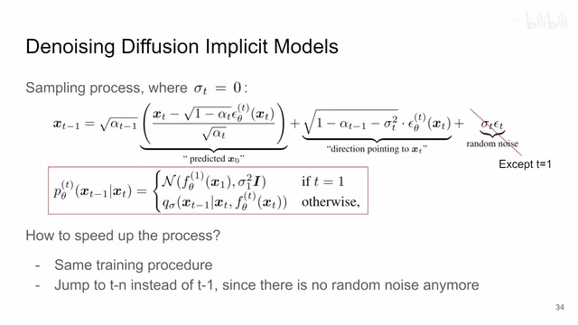
00:06:47–00:08:18 · 画面 026采样的过程呢就是这个样子的对吧，这一块是这个 x0 的预测，前面有一个系数，这一块是 xt 的预测，前面有一个系数。作者说我如果人为的设计对吧，是这个 sigma t 它等于 0，这就意味着我在这个 denoising 的过程中完全没有任何的随机性在里面。那这样你反向的过程就是一个固定的过程了，你也不用说每次我要求 xt-1 的时候要先把这个 xt-2 求出来。
因为你知道从很大的一个 T 到相对小的一个 T 它的整个过程都是一个确定的，没有任何噪声参与的这么一个过程。所以你就可以适当的跳过这些步骤来实现整个采样过程的加速，因为都是确定了没有什么好看的了，只要你的噪声预测足够好，你甚至可以一步到位。也就是说这里不是 XT-1 了，XT-2 行不行，XT-10 行不行对吧，都是变得可以了，因为你把后面随机的部分给去掉了。但是实际的操作中你的。
噪声预测的肯定不是非常完美的，所以为了保证你的图像的生成的质量还是我们一次说可以跳但是不要跳太多，比如说一次跳个 10 步 20 步的就可以了。那么这个就是 DDIM 为什么能加速对吧，因为它的中间的采样过程都是确定好的了，但是你的训练的过程还是所有的 T 都会照顾得到的，大家都来训练更多的样本总是好的。那么以上就是本文最核心的技术贡献了。
感兴趣的朋友呢，你可以去看他的实验。那当然呢，在我们这个视频里面没有涉及的有两个地方，第一个就是这个 sde 他们和这个整个 diffusion 过程中的联系啊，我们没有涉及，因为我不懂，如果你感兴趣呢，可以找相关的这些文章读一读。那第二个呢，就是本文呢，是基于这个 improve 的 ddpm 啊，这篇文章来改的，不是原始的 ddpm，所以你看到有些实现呢，会跟原始的 ddpm 不一样。那像这一篇呢，主要还是以实验为主。
00:08:18–00:08:29 · 画面 027
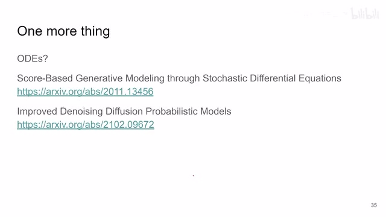
00:08:18–00:08:29 · 画面 02700:08:29–00:08:30 · 画面 028
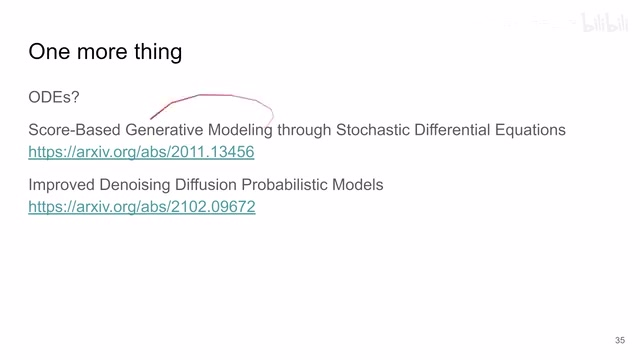
00:08:29–00:08:30 · 画面 02800:08:30–00:08:50 · 画面 029
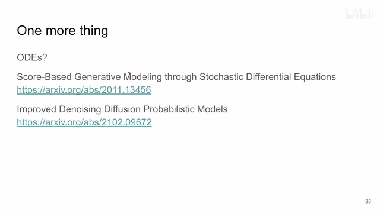
00:08:30–00:08:50 · 画面 029有需要的，肯定你们都看过。好的，那么以上就是我对这篇文章的一个快速的整理。那么感谢您的收看，再见。
00:08:50–00:08:50 · 画面 030
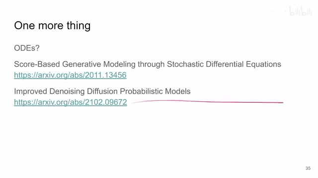
00:08:50–00:08:50 · 画面 030转写与来源说明 · 0 个自动复核提示
保留 23 个原始语音片段，0 个片段触发自动复核提示。提示仅用于定位可能的术语、重复或识别问题，不等于已确认错误。
讲解画面为源视频截图（640×360），不是可编辑 PPT 文件。全片按每秒 2 帧扫描内容变化，逐步展开页保留；连续动画保留代表画面。清晰度受源视频限制。
原视频：paper/合集_2026-10-16_内容生成/[论文速览]Denoising Diffusion Implicit Models DDIM[2010.02502].mp4
SHA-256：ad289408ad4a87b948e8f79558335015dc1e722a5a69a0460925028396aabffd
全文按视频语音与画面制作。原论文可从上方链接下载；完整资料包保留全文、原始逐字稿、字幕和校对记录。